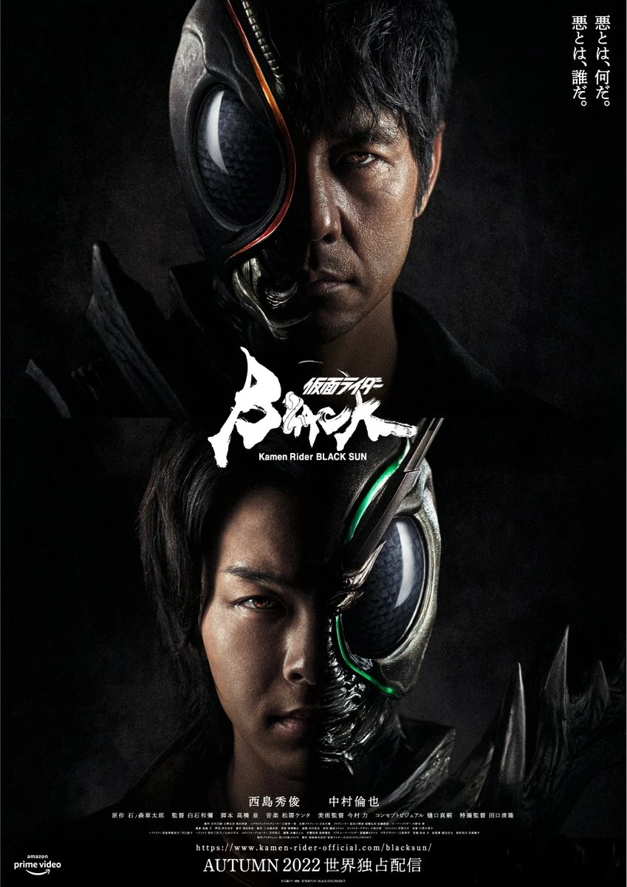

Filmes Exclusivos e Teatrais

A maior parte da produção da série Kamen Rider são episódios de TV, mas, como a Toei Company também é um estúdio de cinema, há muitos filmes de Kamen Rider. Quase toda série tem um ou vários filmes, sendo as únicas omissões O Nascimento do 10º! Kamen Riders Todos Juntos!! e Kamen Rider Kuuga (embora os Riders dessas séries fossem vistos em filmes de dupla posteriores). Filmes podem ser curtos, longos, edições de episódios ou acompanhados de conteúdo especial. Alguns são programados em dupla, junto com outros filmes, como outros filmes do Kamen Rider, Metal Heroes ou, mais comumente, filmes de Super Sentai.
Após Kamen rider Agito, toda série passou a ter um filme de verão, a partir de kamen rider w os filmes passaram a ser em varias estações do ano com cada série tendo no minimo 2 filmes e podenda aumentar muito a quantidade com especiais, a Toei buscando resgatar fás antigos começou a fazer filmes comemorativos de 10 e 20 anos em homenagema séries antigas.
Algo que provavelmente vai ser tornar mais comun são os remekes de séries clássicas em forma de filmes raramente séries, já tem casos como kamen rider ichigo que recebeus os remekes Shin:Prologo,The Firts e Shin kamen rider(2023), kamen rider v3 que recebeu The Next, Black com Black sun e Amazon com o spin-off Amazons.
Recentemente a Toei registrou a marca Kamen rider Premium, que os vai se especializar em produções cinematograficas comorçamento maior, alguns fás teorizam que isso pode significar filmes lançados para o cinema mundial, que levara a franquia para seu público espalhado pelo mundo como o Brasil que tem um base de fás grande graças aos investimentos em dublar as séries para protuguês.